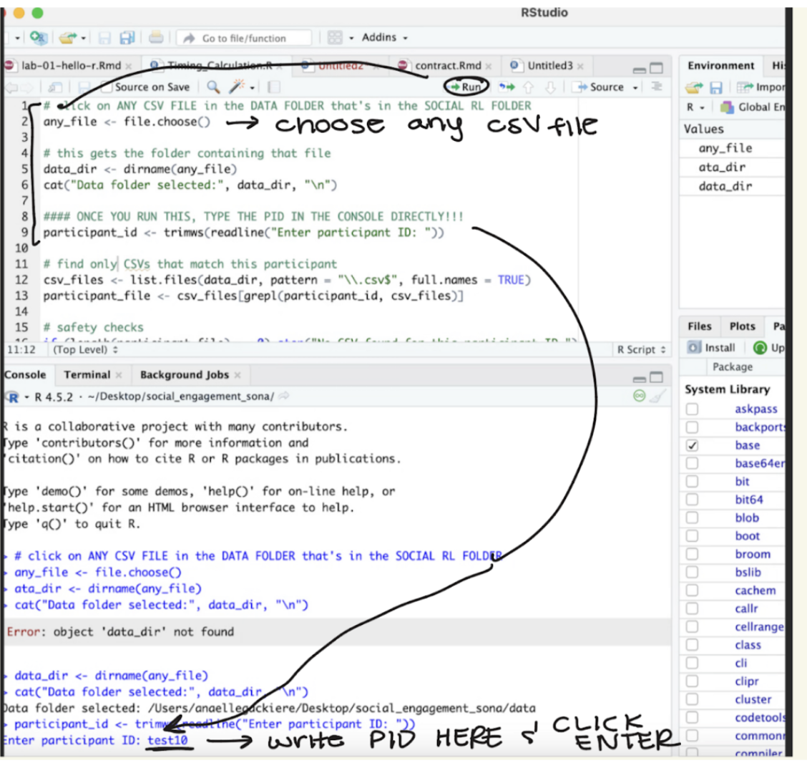

In some experiments, what participants do later depends on how they respond earlier. For instance, activities might be assigned based on depression scores, or, like in my research, on implicit motivation for social engagement. One compelling way to measure this motivation is with a reinforcement learning task that captures how rewarding people find social cues. In this project, I used participants’ choices in that task to decide whether they would spend time alone or with someone else, and for how long. This approach allowed me to test whether people were happier when their activities aligned with their underlying preferences.
How does this work in practice?
Reinforcement learning programs like PsychoPy automatically output a CSV file as soon as the task is completed. This script reads that file directly: the researcher selects the any file in the data folder, enters the participant ID, and the script immediately extracts the necessary results. This allows experiment components to be adjusted quickly and with minimal effort.
The same script can be adapted for a wide range of measures (eg. Implicit Association Test). For instance, it could be used with tasks examining implicit bias or racism to assign participants to different scenarios based on their task performance rather than at random. In this way, experimental conditions can be tailored efficiently and transparently using participants’ own data.
Additionally, nothing fancy is needed to run this on R. This was designed to be as user friendly as possible.
These first few chunks (depicted as comments) cannot be run due to the “file choose” nature of the script.
However, the process will be described below in the form of photos.
Click Timing_Calculation.R. It will open on R studio. Follow the comments on the R script and run the code one line at a time.
When you run the first line, R will direct you to folders. Directions for the RAs in my lab: select the Social RL Folder → DATA Folder → Click on any CSV file.
When you run the line that says # Enter Participant ID, it will ask you to add the PID IN THE CONSOLE. Run that line. If it works, run the rest of the code. You should see the timing calculations then! :-)

#### ONCE YOU RUN THIS, TYPE THE PID IN THE CONSOLE DIRECTLY!!!
#participant_id <- trimws(readline("Enter participant ID: "))# find only CSVs that match this participant
#csv_files <- list.files(data_dir, pattern = "\\.csv$", full.names = TRUE)
#participant_file <- csv_files[grepl(participant_id, csv_files)]# safety checks
#if (length(participant_file) == 0) stop("No CSV found for this participant ID.")
#if (length(participant_file) > 1) stop("Multiple CSVs found for this participant ID. Check filenames.")The rest of the code can be found below in the demonstration section.
Now, it’s time for the pipeline demonstration. You’ll see that if the right data was collected, we’ll get a nice table that tells us what we need to know for the following activity.
# Participant ID
participant_id <- "test1"
# Read CSV
data <- read.csv(paste0("p01/data/", participant_id, ".csv"))# required columns for our calculations
required_cols <- c("OneOrTwo", "PictureValence")
missing_cols <- setdiff(required_cols, names(data))
# another safety check!
if (length(missing_cols) > 0) {
stop(paste("Missing required columns:", paste(missing_cols, collapse = ", ")))
}In this scenario, we only want the counts of the photos with positive valence. These are the social rewards in our study that will determine the following activity.
# count rows where:OneOrTwo == 2 AND PictureValence == 1
num_positive_valence <- sum(
data$OneOrTwo == 2 & data$PictureValence == 1,
na.rm = TRUE
)Now we convert the number of positive photos they selected in the task to seconds.
# converting to seconds
total_seconds <- num_positive_valence * 15
print(paste("Participant ID:", participant_id))## [1] "Participant ID: test1"## [1] "Positive valence trials: 10"## [1] "Total valence time: 150 seconds"And done! In three steps total (running the first two lines and choosing a file; running the third line and typing in the participant ID in the console; and running the rest of the lines), the research assistants get all the information they need to move on to the next step of the experiment. All in all, this takes about 2 minutes!
RStudio may seem user friendly to people with many years of coding experience. But for students who have never interacted with it, it may seem daunting. My RAs even get nervous opening Windows Files (who can blame them!). To truly understand something, you must be able to teach it too. Not only does this process teach them what RStudio looks like, it also teaches me how to teach others!
Notes
You’ll notice that there are multiple safety checks in the script (in the Time_Calc .R file). This is important especially in these types of scenarios, but I have now incorporated many safety checks in most of my work, even if they may feel redundant.
This script may seem small and simple to you. However, I am used to writing scripts in a way that makes sense to me. Writing it in a way that makes sense to everyone on my team proved more challenging than I thought.
I have provided a test1.csv that you may choose to run the Timing_CalcP01.R to see how this feels in practice. If the instructions feel to complicated for you, feedback is always appreciated to make this more user friendly.